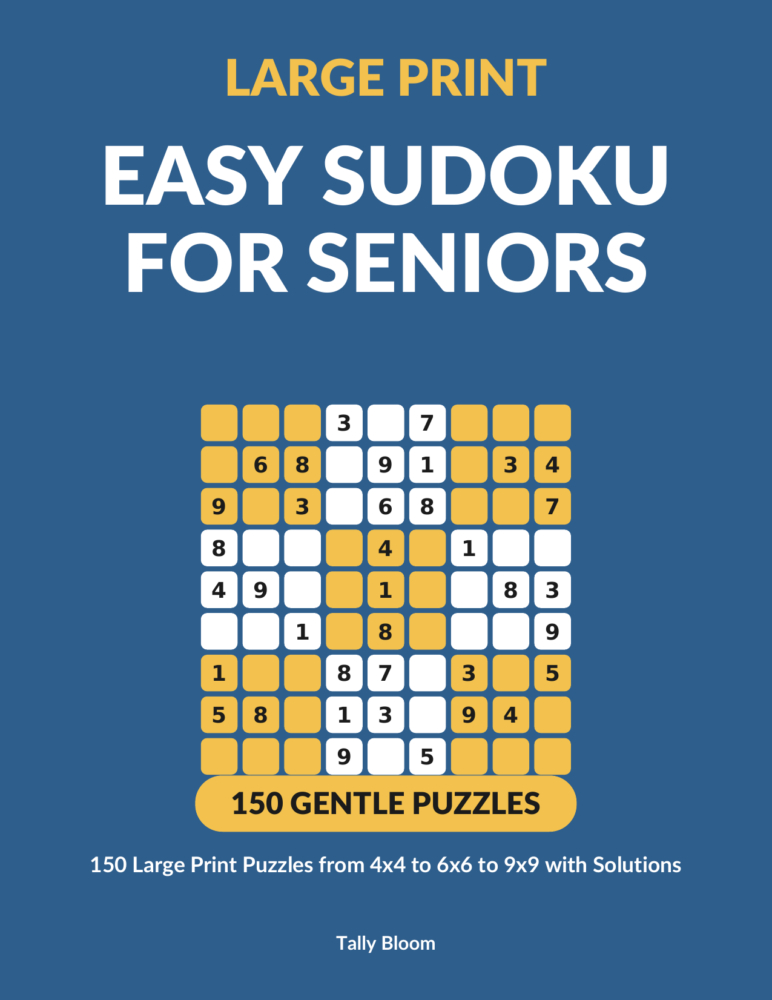

Easy Sudoku for Seniors: 150 Large Print Puzzles from 4x4 to 6x6 to 9x9 with Solutions - Big Numbers for Relaxing Brain Exercise
Start small and build up: 150 sudoku puzzles printed in big, bold numbers, from tiny 4 x 4 warm-ups to classic 9 x 9 puzzles, on large 8.5 x 11 inch pages.
Buy on Amazon →
Inside the book
- 150 puzzles that build up gently: 30 tiny 4 x 4 warm-ups, 40 6 x 6 puzzles, then 80 classic 9 x 9 puzzles (40 Easy, 40 Medium)
- Large print: big, bold numbers on large 8.5 x 11 inch pages
- Every puzzle checked by computer: exactly one solution, solvable by logic alone with no guessing
- Full solutions at the back of the book
See it on Amazon →Printed paperback, 8.5 x 11 inches, sold and shipped by Amazon.